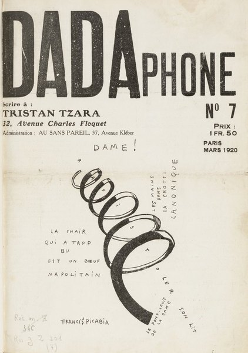
CRVI001482Francis Picabia - Dadaphone no. 7
Cover · 1920
Cover · 1920
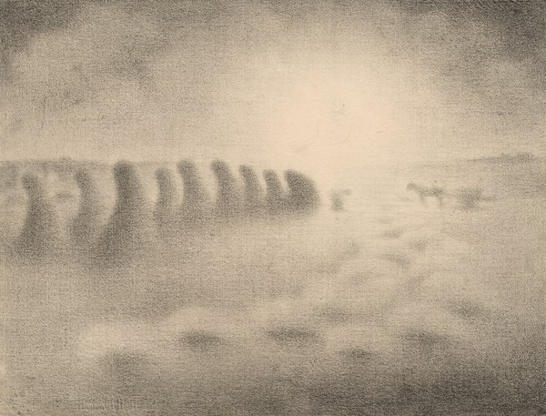
CRVI001601Charles Angrand - End of the Harvest
c. 1892–1905
c. 1892–1905

CRVI000877Maurice Denis - La Fontaine
Esquisse préparatoire du décor Terre Latine · peinture à l’essence sur papier calque collé sur toile · 1906–1908
Esquisse préparatoire du décor Terre Latine · peinture à l’essence sur papier calque collé sur toile · 1906–1908
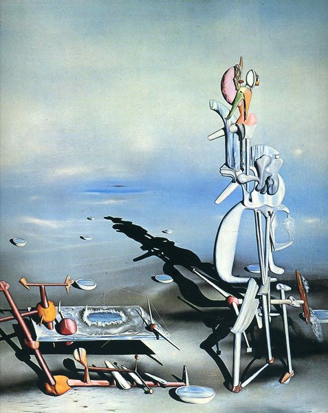
CRVI001551Yves Tanguy - Indefinite Divisibility
1942
1942
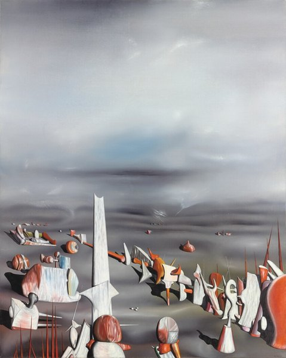
CRVI001552Yves Tanguy - The Rapidity of Sleep
1945
1945

CRVI000873John Provencher - [On, Clubhouse Paris]
On · Clubhouse Paris
On · Clubhouse Paris
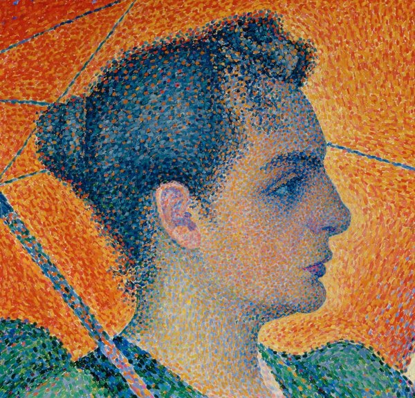
CRVI001427Paul Signac - Woman with a Parasol
1893
1893

CRVI000879Maurice Denis - L’Oratorio pour « L’Éternel Printemps »
Oil on joined paper laid down on canvas · 142 × 201 cm · 1904
Oil on joined paper laid down on canvas · 142 × 201 cm · 1904
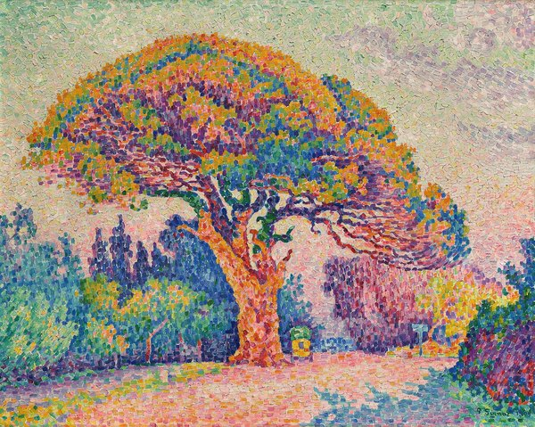
CRVI001426Paul Signac - The Pine Tree at Saint-Tropez
1909
1909
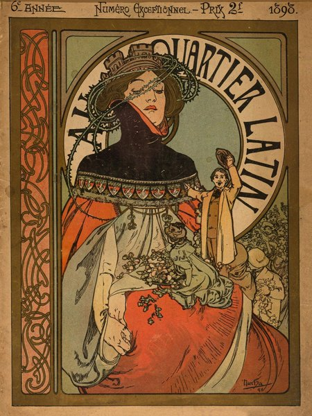
CRVI001438Alphonse Mucha - Au Quartier Latin
Cover · 1898
Cover · 1898
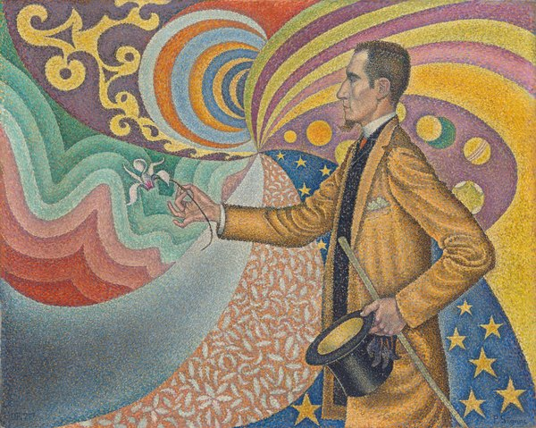
CRVI001424Paul Signac - Opus 217. Against the Enamel of a Background Rhythmic with Beats and Angles, Tones, and Tints, Portrait of M. Félix Fénéon in 1890
1890
1890
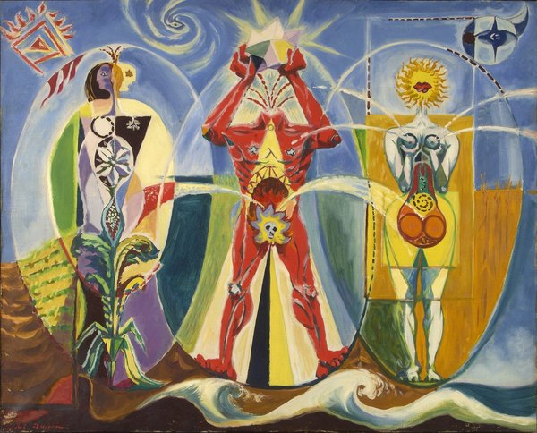
CRVI001553André Masson - L'homme emblématique
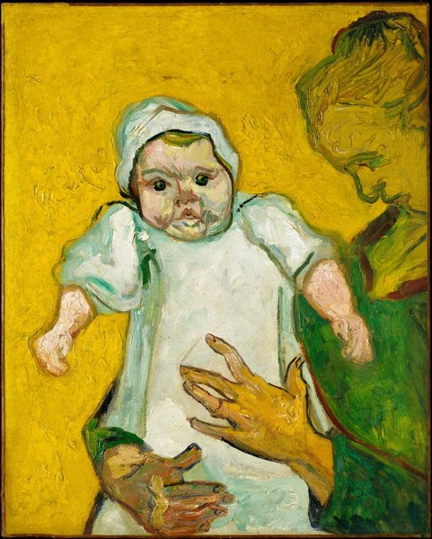
CRVI001478Vincent van Gogh - Madame Roulin and Her Baby
1888
1888
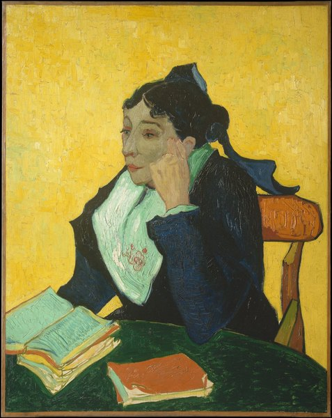
CRVI001477Vincent van Gogh - L'Arlésienne: Madame Joseph-Michel Ginoux (Marie Julien, 1848–1911)
1888–89
1888–89
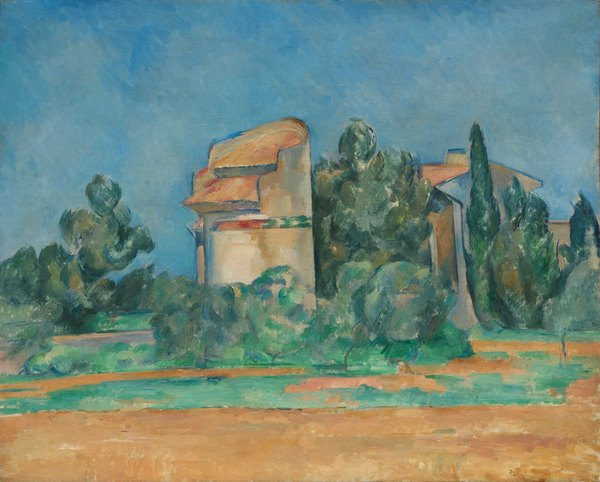
CRVI001475Paul Cézanne - The Pigeon Tower at Bellevue
1890
1890
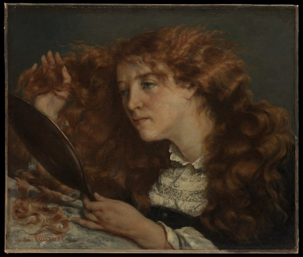
CRVI001472Gustave Courbet - Jo, La Belle Irlandaise
1866
1866
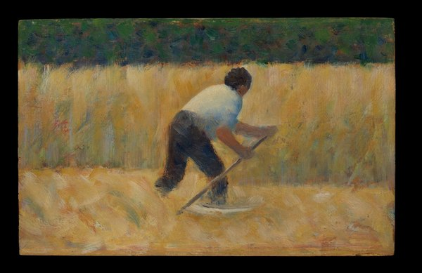
CRVI001597Georges Seurat - The Mower
1881–82
1881–82
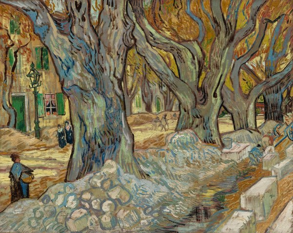
CRVI001476Vincent van Gogh - The Large Plane Trees (Road Menders at Saint-Rémy)
1889
1889
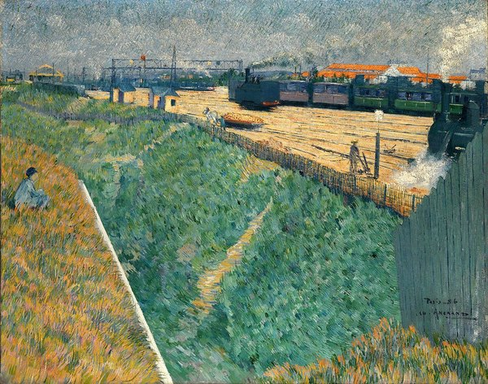
CRVI001599Charles Angrand - The Western Railway at its Exit from Paris
1886
1886

CRVI000819Seymour Chwast - Push Pin Butcher
Mixed media · 46 × 74 cm · 1981
Mixed media · 46 × 74 cm · 1981
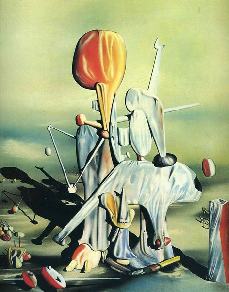
CRVI001550Yves Tanguy - Through Birds, Through Fire, but Not Through Glass
1943
1943
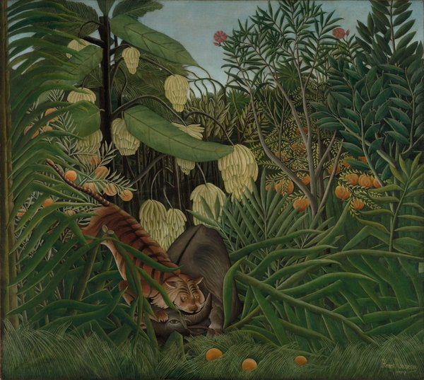
CRVI001481Henri Rousseau - Fight Between a Tiger and a Buffalo
1908
1908
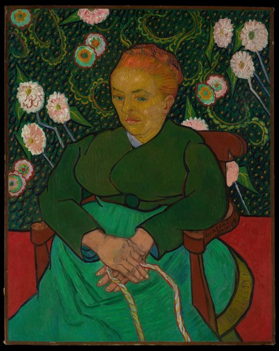
CRVI001479Vincent van Gogh - La Berceuse (Woman Rocking a Cradle; Augustine-Alix Pellicot Roulin, 1851–1930)
1889
1889

CRVI000878Maurice Denis - Annonciation d’Assise
Huile sur carton · 54,5 × 72 cm · 1914
Huile sur carton · 54,5 × 72 cm · 1914
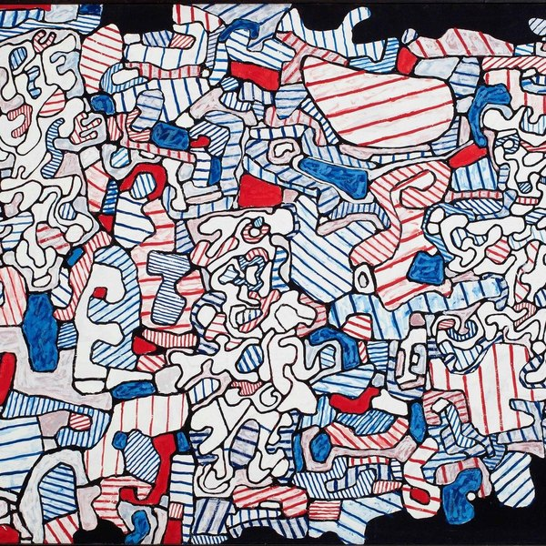
CRVI001448Jean Dubuffet - Untitled (Hourloupe)
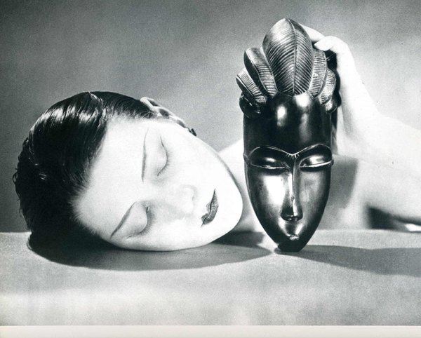
CRVI001487Man Ray - Black and White (Noire et blanche)
1926
1926
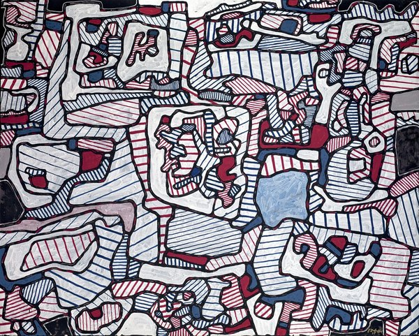
CRVI001449Jean Dubuffet - Site habité d'objets (Site Inhabited by Objects)
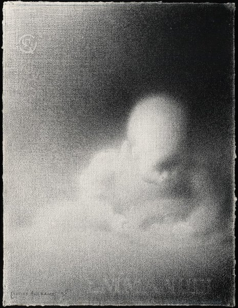
CRVI001600Charles Angrand - Head of a Child (Emmanuel)
1898
1898
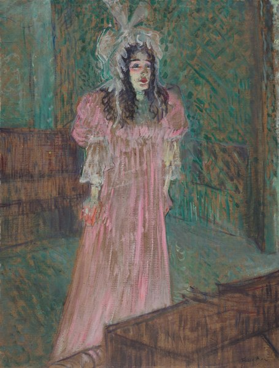
CRVI001480Henri de Toulouse-Lautrec - May Belfort
1895
1895
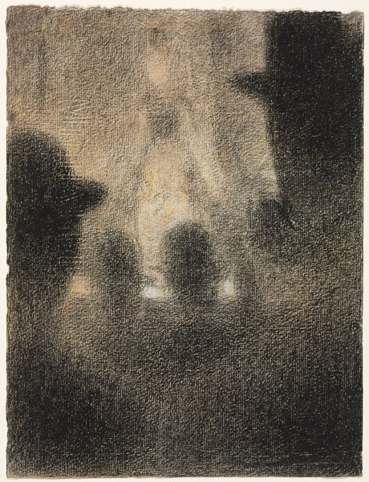
CRVI001596Georges Seurat - At the Concert Parisien
1887–88
1887–88
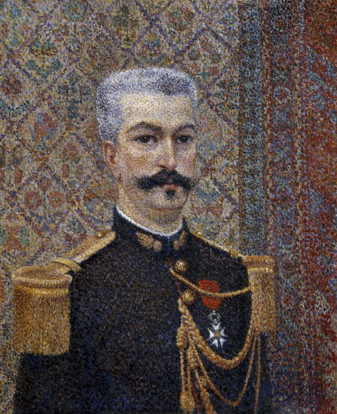
CRVI001602Albert Dubois-Pillet - Portrait of Monsieur Pool

CRVI000830Seymour Chwast - Liberty
Artis 89 · offset · 60 × 84 cm
Artis 89 · offset · 60 × 84 cm